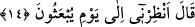

Senden bu kendini beğenme defoluncaya kadar
Gönlünden de çok kan akar, gözünden de
İblisin illeti, “Ben Âdem’den hayırlıyım” demesiydi
Bu hastalık, her yaratılanda vardır
Bu hastalığa mübtelâ olan kendini hor görse de
Altında pislik olan saf bir su gibi
İmtihan kastıyla onu karıştıracak olsan
Su bulanır, pislik rengini alır hemen
Ey yiğit! Irmak sana saf ve berrak görünür
Ama senin ırmağının dibinde de pislik var
Ashâb-ı kiram (r. anhüm), nefs-i emmârenin kötülüklerinden dolayı kan ağlarlardı.
Anlatılır ki, kadılardan birisi Ebu Yezid Bistamî’ye gelerek: “Senin bildiklerini biz
de biliyoruz. Ancak bildiklerimiz kalbimize tesir etmiyor.” dedi.
Bayezid ona:
“–Yanına bir miktar ceviz al, onları bir torbaya doldurup boynuna as, Sonra bu
şekilde bütün şehri dolaşmaya çık. Dolaşırken şöyle bağıracaksın:
“–Kim bana bir tokat atarsa, ona bir ceviz vereceğim.” Cevizler bitinceye kadar buna
devam et. Eğer bu dediklerimi yaparsan, bildiklerinin tesirini kalbinde duyarsın.” diye
cevap verdi.
Bu sözleri işitince kadı:
“–Estağfirullah” dedi.
Bunun üzerine Bayezid:
“–Bak şimdi günaha girdin, ben sana nefsin büyüklenmesinden kurtulmanın yollarını
anlatıyorum, sen ise kibrinin fazlalığından “estağfirullah” diyerek söylediklerimi hafife
alıyorsun.” dedi.
Ebu Cafer Bağdadî der ki: “Şu altı haslet altı kişiye yakışmaz: Tamahkârlık âlimlere,
acele karar vermek yöneticilere, cimrilik zenginlere, kibirlenmek fakirlere, sefihlik
yaşlılara ve kovuculuk etmek de soylu kişilere yakışmaz.”
Sana gereken, tevhide sarılmaktır. Çünkü tevhid, bütün kötü huyların damarlarını
kesen keskin bir kılıçtır.
14. İblis: Bana, (insanların) tekrar dirilecekleri güne kadar mühlet ver, dedi.
Cennetten kovulduktan sonra İblis “dedi: “Bana” Âdem ve zürriyyeti yok olduktan
sonra ceza için ikinci defa sûra üfürüldüğü vakit “tekrar diriltilecekleri güne kadar